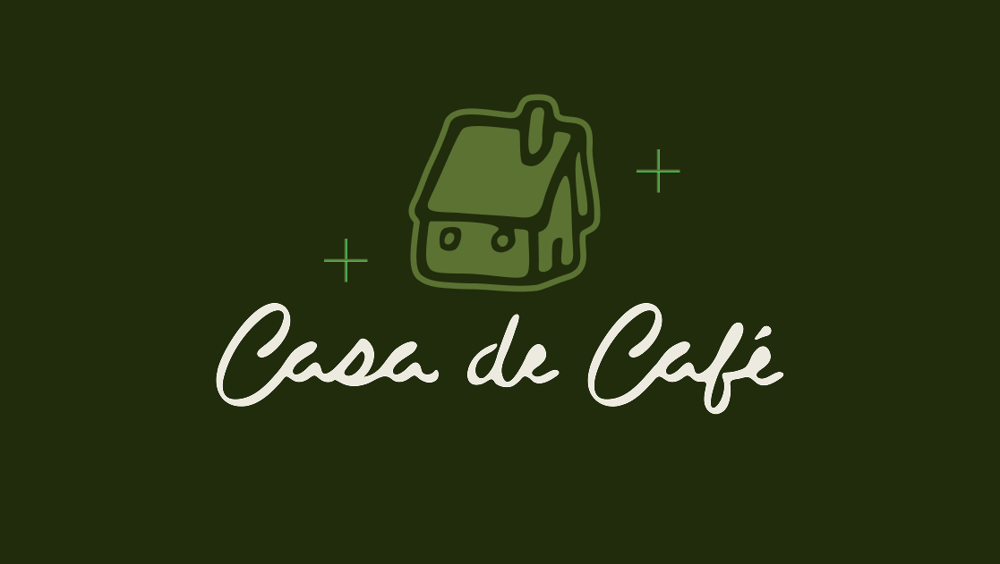
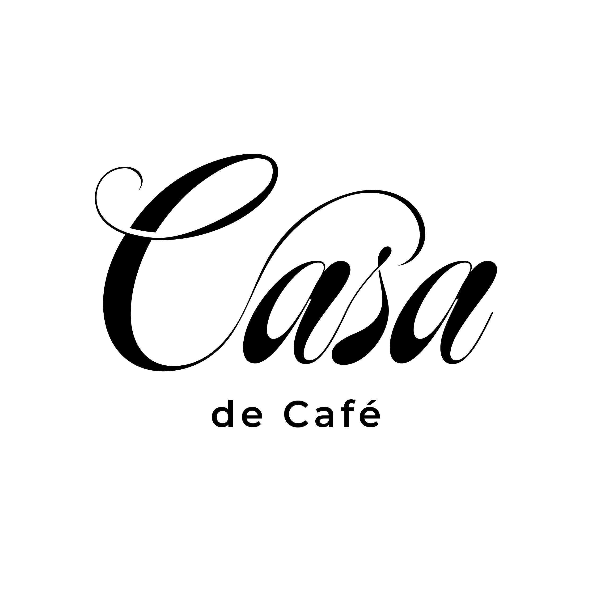
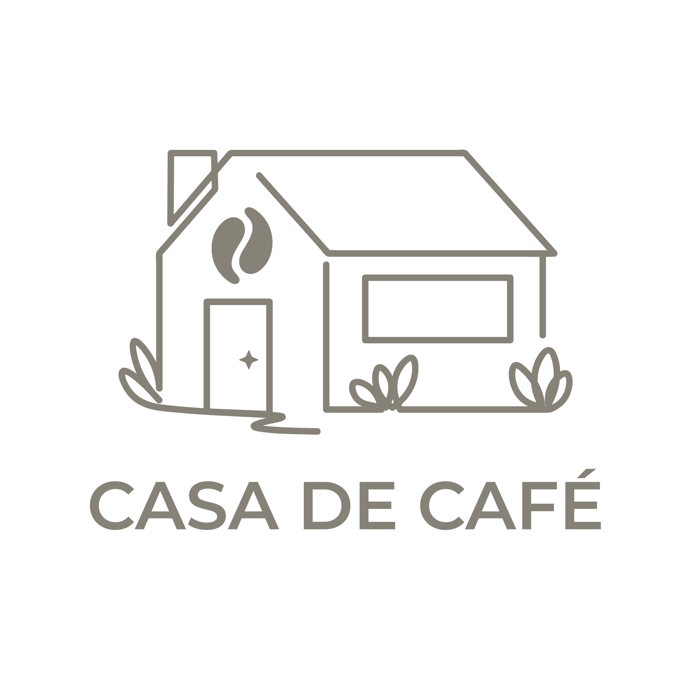
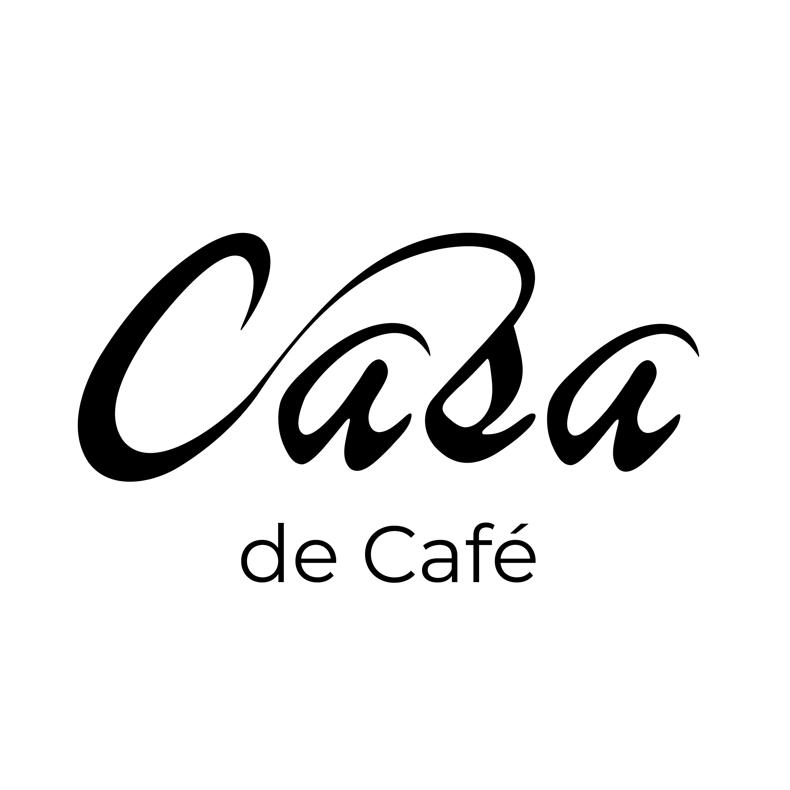
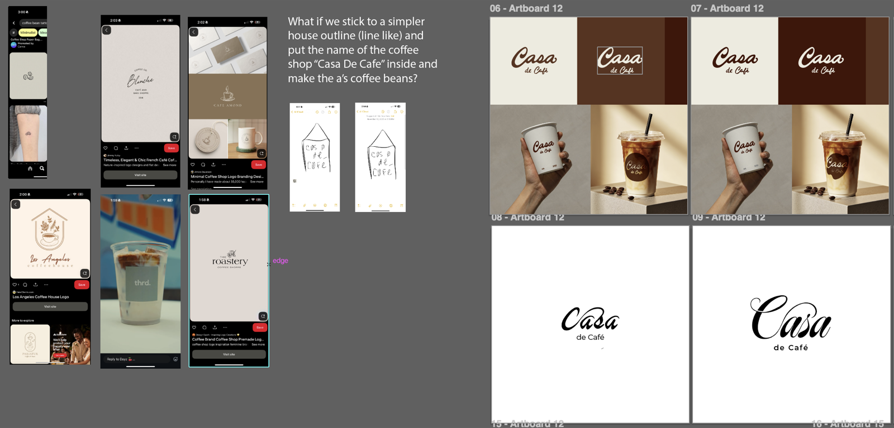
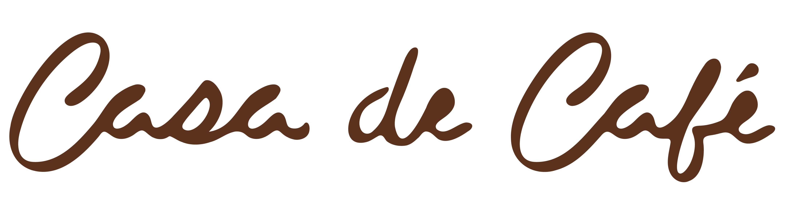
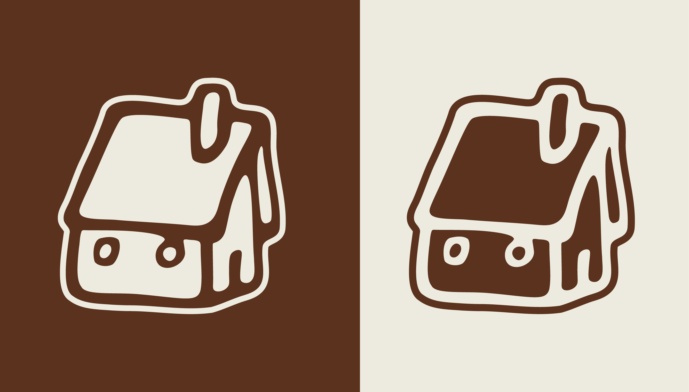
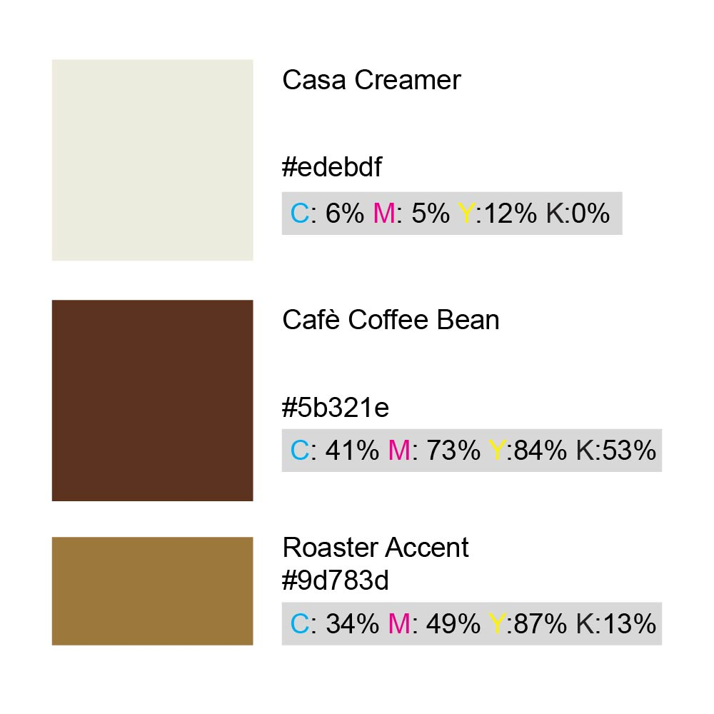
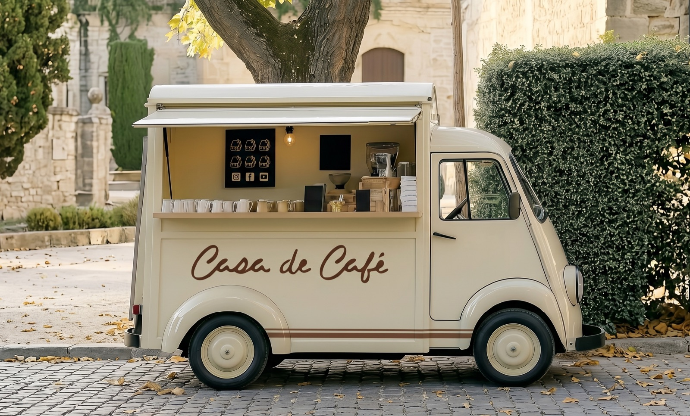
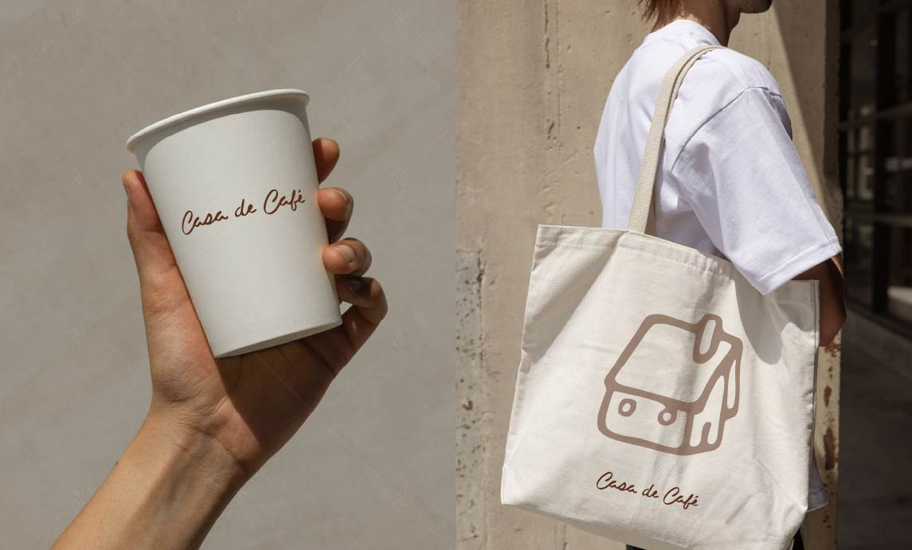

A logo and brand identity for a coffee truck startup — built to feel modern, warm, and homemade.

I led the creative direction and designed the logo for Case de Cafe, a new coffee truck business. Working directly with the owner, I shaped a mark that felt modern enough to stand out on the street yet warm and homemade enough to feel personal — and carried the project from first sketches through final delivery.
The client was launching a coffee truck and wanted a brand that felt approachable and handcrafted. The direction was specific: modern, but warm and homemade — nothing cold or corporate. It needed to read clearly at a distance on the truck while still feeling like something made with care.
I explored several directions before landing on the final mark, testing how literal to be with the coffee cues, how to handle the house motif, and how much warmth the type could carry.



A glimpse into the build — refining curves, spacing, and proportions of the mark directly in Adobe Illustrator until it felt balanced and intentional.

The finished identity pairs a friendly house-and-cup mark with warm, rounded type and an earthy palette — modern in its simplicity, homemade in its feel.



Carried onto the truck and packaging, the mark holds up at scale and stays warm up close.


The client came away with a cohesive, ownable identity for her coffee truck — a mark that captures the modern, warm, homemade feeling she set out to create, ready to roll from day one.